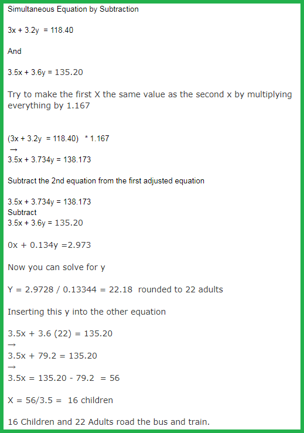
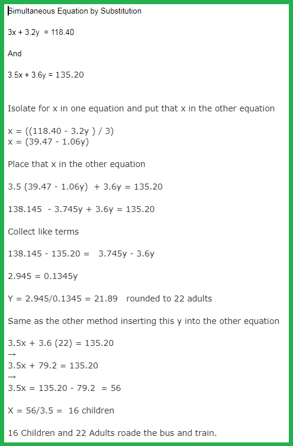
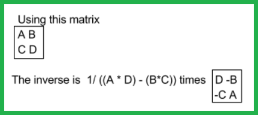

Matrix math using Tensorflowjs
See the video
here.
Checkout a really good matrix math explanation site at
http://www.mathsisfun.com/algebra/matrix-inverse.html
...
Click here to see the working HTML code.
Example: Solving simultaneous equations using the subtraction technique

Example: Solving simultaneous equations using the substitution technique

Example: Taking the inverse of a 2 x 2 matrix

For the Bus and Train example using the real values refer to the site at
http://www.mathsisfun.com/algebra/matrix-inverse.html
This
Github
, ... this
Github Website Version
, ... this
Hosted Website Version
, ...
Tensorflowjs
By Jeremy Ellis
Twitter
@rocksetta
Website
http://rocksetta.com
Use at your own risk!